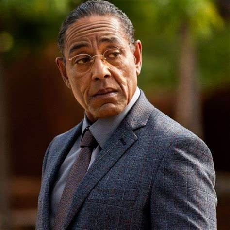
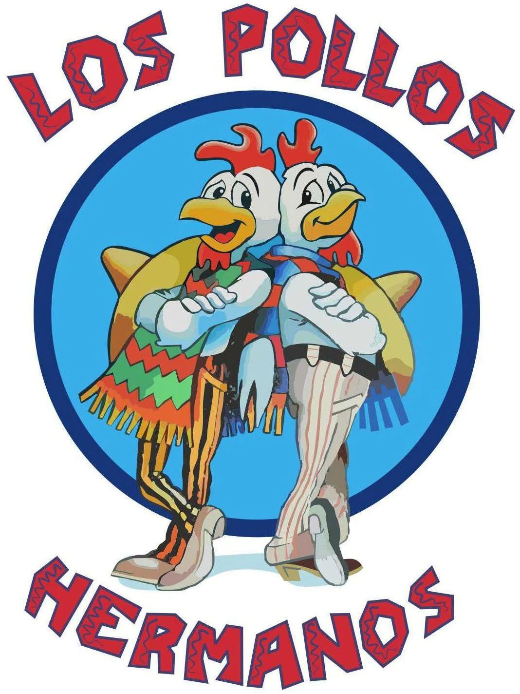
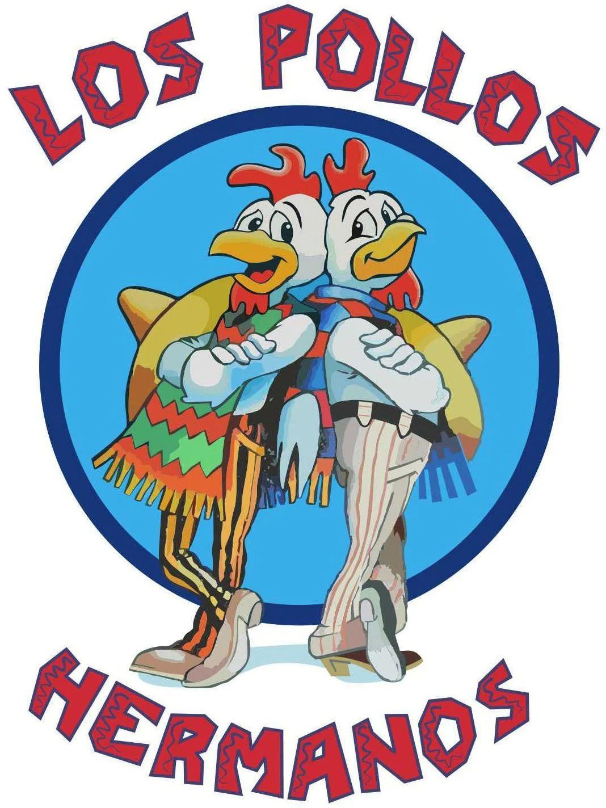

Gustavo Fring
calculated businessman, a mastermind, and a legend.

"I do this because I can. I do this because I must. And I do this because I’m good at it."
- 1980s: Arrival in Mexico
- 1989: The Poolside Execution 💔
- 1990s: Building Los Pollos Hermanos 🍗
- Mid-2000s: Partnership with the Cartel
- 2009: Walter White Enters the Scene 🧪

 

If you want to try the most delicious chicken in the world, please donate to have them open in your area